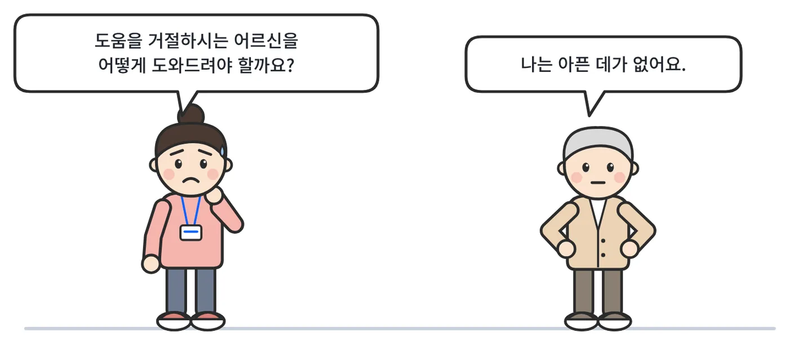
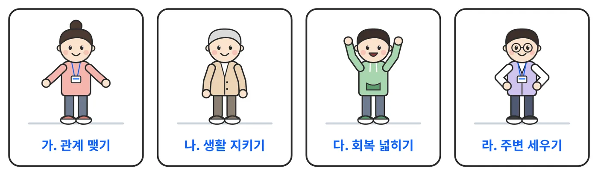
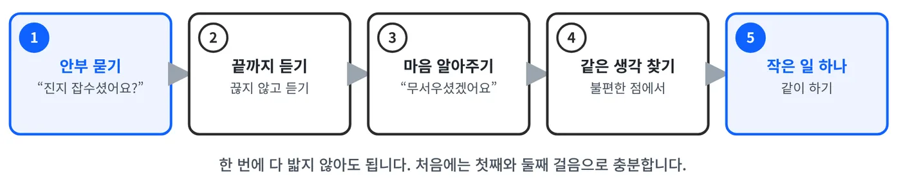
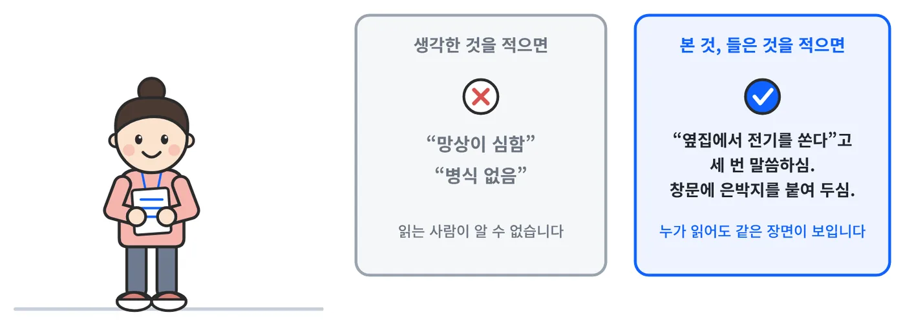
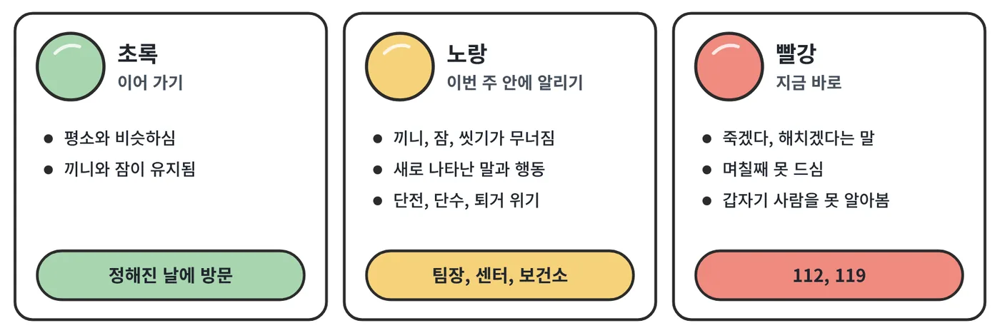

한 노인복지관의 질문에서 시작했습니다

정신질환이 있지만 본인은 아프다고 생각하지 않고, 치료도 복지 서비스도 거절하는 어르신을 복지관에서 어떻게 도울 수 있는가. 2025년 12월 사례관리 자문은 이 질문에서 시작했고, 그때 정리한 실천 원칙 12가지를 바탕으로 2026년에 매뉴얼 초안으로 넓혔습니다.
노인복지관에서 사례관리와 독거노인 지원을 맡은 실무자를 위해 썼습니다. 정신건강 분야를 전공하지 않은 사회복지사도 읽을 수 있도록 용어를 풀어 썼습니다.
매뉴얼의 구성
| 부 | 제목 | 내용 |
|---|---|---|
| 1부 | 이해하기 | 병식이 무엇이고 왜 생기는지, 나이 들어 처음 나타난 정신증은 무엇이 다른지, 사회복지사가 할 수 있는 일은 무엇인지 |
| 2부 | 실천 원칙 12가지 | 관계 맺기, 생활 지키기, 회복 넓히기, 주변 세우기의 네 묶음. 원칙마다 바로 쓸 수 있는 말과 행동 |
| 3부 | 도구 | 관찰하고 적는 법, 어르신과 이야기하는 다섯 걸음, 바로 복사해 쓰는 도구 열다섯 가지 |
| 4부 | 묻고 답하기와 사례 연습 | 현장에서 자주 묻는 질문 열여섯 가지, 두 가지 연습 사례 |
| 5부 | 기관이 갖출 것 | 종결 기준, 기관 연계, 입원 절차, 성과 기록, 실무자 보호, 기관이 미리 정해 둘 것 |
| 부록 | 도구 목록, 근거표, 참고문헌 | 이 책이 기댄 연구와 가로 서식 |
이 페이지에는 2부의 원칙 전체, 3부의 다섯 걸음과 도구, 4부의 문답 전체를 실었습니다. 1부와 5부, 연습 사례는 매뉴얼 본문에 있습니다.
실천 원칙 12가지
네 묶음으로 나누었습니다. 순서대로 다 해야 하는 것은 아닙니다. 지금 어르신과의 관계가 어디쯤 와 있는지에 따라 필요한 원칙부터 읽으면 됩니다. 원칙을 누르면 내용이 열립니다.

1거절을 존중하되 포기하지 않는적극적 아웃리치 · Assertive Outreach
병식이 없는 대상자는 상담 및 프로그램 참여를 반복적으로 거부하거나, 약속을 잡아도 나타나지 않는 경우가 많습니다. 이때 거절을 ‘의지 부족’이나 ‘비협조적 태도’로 해석하여 서비스를 종결하면, 사실상 가장 취약한 이들을 구조에서 탈락시키는 결과를 초래합니다.
따라서 “참여의 어려움 자체가 증상의 일부이며, 이는 서비스 종료 이유가 아니라 개입 대상”이라고 바라보아야 합니다.
- 참여를 거부하거나 약속에 오지 않는 것은 '비협조'가 아니라 '증상'의 표현입니다.
- “먼저 찾아가는 사람”이 사회복지사의 핵심 역할입니다.
- 관계 형성 실패를 어르신 책임으로 돌리지 않고, 서비스의 유연성 문제로 봅니다.
중증 정신질환이 있는 사람이 서비스를 이용하다가 그만두는 일은 흔합니다. 서비스를 이용한 적이 있는 사람 셋 중 한 명까지 도중에 그만둔다는 보고가 있습니다(Kreyenbuhl 외, 2009). 회복을 돕는 태도와 신뢰 관계가 있을 때 참여가 늘어납니다(Dixon 외, 2016).
위의 행동 지침 하나하나의 효과를 따로 확인한 연구는 찾지 못했습니다. 현장 경험에서 나온 제안으로 읽어 주십시오.
참고한 영국 기준: 17번(만나기 어렵다는 이유로 종결하지 않는다, 꾸준하고 유연하게 찾아간다).
2숨기지 않고 함께 보여주는투명성 · Transparency & Shared Information
망상·의심이 있는 노인은 “나 몰래 뭔가 꾸미고 있다”는 느낌을 가장 두려워합니다.
사회복지사가 기록을 쓰거나, 다른 기관과 통화하고, 무언가 서류를 작성할 때 이를 설명하지 않으면 의심과 적대감이 급격히 상승합니다.
따라서 “모든 것을 당사자 앞에서, 당사자와 함께 공유”하는 투명성 전략이 필수입니다.
- “당사자 몰래 진행되는 일”이 없어야 합니다.
- 기록·연계·회의 등 서비스 전 과정에서 정보를 공유합니다.
- 투명성은 단순한 설명이 아니라 편집증·불신을 완화하는 치료적 개입입니다.
이 지침의 효과를 직접 확인한 연구는 찾지 못했습니다. 현장 경험에서 나온 제안입니다. 참고한 영국 기준: 84번(비밀보장과 그 한계를 말과 글로 설명한다), 21번(돌봄 계획을 함께 만들고 사본을 드린다).
3예측 가능한 리듬을 만드는접촉 패턴 · Consistent Engagement Rhythm
병식이 없는 조현병/정신증 대상자는 시간 감각·약속 관리·동기 유지가 어렵고, 감정 기복도 심합니다. 이 때, 불규칙한 방문·연락은 오히려 불안을 자극하고, “언제 올지 모르는 사람”으로 인식되면 문을 더 굳게 닫을 수 있습니다. 반대로 정해진 요일·시간대에 반복적으로 찾아오는 사람은 서서히 “예측 가능한 존재”로 받아들여집니다.
- “예측 가능성”은 안전감의 중요한 구성 요소입니다.
- 우발적인 방문보다 정기적인 패턴이 신뢰를 만듭니다.
- 약속을 지키는 것은 “치료적 신뢰”의 핵심입니다.
자주, 꾸준히 만나는 쪽이 낫다는 근거는 있습니다. 담당자 한 사람이 맡는 사람이 20명 아래여서 자주 만날 수 있는 집중 사례관리를 다룬 비교 연구 40편(7,524명)을 모아 보니, 보통의 돌봄보다 서비스를 도중에 그만두는 사람이 적었고 입원 기간도 줄어드는 쪽이었습니다(Dieterich 외, 2017). 다만 입원을 줄이는 효과는 원래 입원이 잦던 곳에서 뚜렷했고(Burns 외, 2007), 연구 대상은 18~65세여서 노인에게 그대로 옮길 수는 없습니다. 노인 가정방문 연구 18편(13,447명)에서는 요양시설 입소를 줄이는 효과가 뒤이은 방문 횟수가 많은 연구에서 나타났고, 기능이 떨어지는 것을 늦추는 효과는 여러 영역을 두루 살핀 뒤 여러 번 다시 찾아간 연구에서 나타났습니다(Stuck 외, 2002). 같은 담당자가 끊기지 않고 이어서 만나는 것이 결과를 좋게 하는지는 연구마다 달랐습니다(Puntis 외, 2015). 요일과 시간을 정해 두는 것, 짧게 자주 가는 것이 길게 가끔 가는 것보다 나은지를 직접 견준 연구는 찾지 못했습니다. 이 부분은 현장 경험에서 나온 제안입니다.
참고: DIALOG+ 연구가 이루어진 영국 지역사회 팀에서는 담당자가 환자를 적어도 한 달에 한 번 만나게 되어 있었습니다(Priebe 외, 2015). 영국 기준 111번은 전일제 담당자 한 사람이 맡는 사람을 15명 이하로 정하고 있습니다.
4위험은 자·타해만이 아니다생활 기반 위험평가 · Everyday Risk Assessment
정신과 시스템은 자·타해 위험(자살, 공격성)에 초점을 두지만, 복지관에서 노인 조현병 대상에게 더 흔한 위험은 자기방임, 기능붕괴, 그리고 극단적 고립입니다.
이들은 죽음을 생각하지 않아도 밥을 거의 못 먹고, 집이 쓰레기장처럼 변하고, 월세·공과금 체납이 쌓이고, 의료·건강관리를 완전히 방치합니다.
- 위험은 “죽을 위험”만이 아니라 “삶이 무너지는 위험”을 포함합니다.
- 자살 언급이 없어도, 생활 기능이 붕괴되고 있으면 위험이 높은 사례로 봅니다.
- 위험 사정은 정신과적 진단이 아니라 생활 관찰로도 가능합니다.
지역사회 노인의 자기방임 위험 요인으로 남성, 혼자 사는 것, 낮은 경제 수준, 우울, 좁은 사회관계가 보고되었습니다(Yu 외, 2021). 어떤 도움이 자기방임을 줄이는지에 대한 연구는 아직 부족합니다.
참고한 영국 기준: 13번(위험 평가와 관리 계획을 함께 만든다). 생활 기능에 관해서는 본인의 말이 실제와 다를 수 있으므로(Rose와 Harvey, 2025) 냉장고, 약 봉투, 고지서처럼 눈에 보이는 것을 함께 살핍니다. 서식은 도구 5(가정방문 점검표)입니다.
5주거·돈·밥이 곧 치료생활기반 개입의 우선순위 · Housing, Money, Health as Core Treatment
조현병/정신증 대상자는 흔히 “약을 안 먹으니 문제”로만 이해되지만, 불안정한 주거, 빈곤, 만성 신체질환 관리 실패가 증상을 악화시키고 재입원을 반복시키는 핵심 요인입니다. 따라서 사례관리는 주거 안정, 재정관리, 기초 의료 접근을 약물치료와 동급의 핵심 개입 영역으로 간주할 필요가 있습니다.
- 정신과 치료 동의 여부와 무관하게, 주거·소득·기초 의료 접근은 반드시 개입해야 합니다.
- “정신과 가시면 도와드리겠다”가 아니라, 먼저 생활 문제를 해결하면서 신뢰 관계를 만듭니다.
- “생활 기반 회복”이 가능해질 때, 그 다음 단계로 치료 동기를 이야기할 수 있습니다.
정신질환과 술·약물 문제가 함께 있는 노숙 성인 225명을 두 집단으로 나누어 비교한 연구가 있습니다. 치료를 조건으로 걸지 않고 집을 먼저 지원한 집단은 주거를 더 잘 유지했고 정신과 증상은 나빠지지 않았습니다(Tsemberis 외, 2004). 노인을 대상으로 한 연구가 아니므로 참고로 삼습니다.
참고한 영국 기준: 53번(주거, 급여와 빚 관리, 사회서비스 이용을 돕는다).
6정신과 접근이 막히면 몸부터 챙긴다신체 건강 모니터링
노인 조현병 대상자는 심혈관질환, 당뇨, 비만, 갑상선 등 신체질환 위험이 매우 높고, 항정신병 약 복용 시 대사증후군 위험도 증가합니다.
그러나 병식이 없거나 치료 거부가 강하면 정신과뿐 아니라 내과 모두 접근이 막히는 상황이 발생합니다. 따라서 신체건강 관리는 접근의 “우회로”이자 필수적 치료 요소입니다.
- “정신과 진료”를 설득하기 어렵다면, 먼저 ‘건강 체크’로 접근합니다.
- 혈압·혈당·체중·허리둘레 등 기초 지표만으로도 위험 신호를 알아챌할 수 있습니다.
- 신체 건강을 챙겨주는 경험이 쌓일수록, 대상자는 사회복지사를 ‘통제자’가 아닌 ‘돌봄 제공자’로 인식합니다.
50세 이상 중증 정신질환자를 두 집단으로 나누어 비교한 연구에서, 생활기술 훈련과 간호사의 건강관리를 함께 받은 집단은 생활 기능과 건강검진 참여가 나아졌습니다(Mueser 외, 2010; Bartels 외, 2014). 영국의 Lester 자료는 정신증이 있는 사람의 심장, 혈관, 당뇨 위험을 살피려고 만든 점검 도구입니다. 건강 점검이 관계를 여는 데 도움이 되는지 확인한 연구는 찾지 못했습니다. 혈당과 콜레스테롤 검사는 복지관이 아니라 의료기관에서 합니다.
참고한 영국 기준: 39번(Lester 자료로 신체 건강을 살핀다). 눈과 귀가 어두워지는 것은 나이 든 사람에게 정신증이 생기기 쉬워지는 조건의 하나로 꼽힙니다(Reinhardt와 Cohen, 2015). 그래서 도구 4(몸 건강 점검표)에 눈과 귀를 넣었습니다.
7환자가 아니라 역할을 가진 이웃으로사회적 역할 부여 · Structured Activity & Roles
조현병·정신증 노인은 오랜 병력과 낙인 경험으로 인해 “나는 쓸모없다”, “나는 그냥 병자다”라는 자기개념(자아상)을 가지기 쉽습니다.
단순한 여가 프로그램 참여보다, 구체적 역할을 부여받는 경험이 자기존중감과 현실 접촉을 회복시키는 데 훨씬 중요합니다.
- 아무리 작은 역할이라도 “나에게 맡겨진 책임 있는 일”을 갖는 것이 회복의 핵심입니다.
- 역할은 “치료 대상” 정체성을 줄이고 “동네 어르신/봉사자/도우미” 정체성을 키웁니다.
- 역할 부여는 증상이 완전히 안정된 후가 아니라, 안전이 확보된 범위 내에서 조기에 시작할 수 있습니다.
원칙 6에서 소개한 연구는 생활기술 훈련이 나이 든 정신장애인의 기능을 높인다는 점을 보여 줍니다. 복지관 안의 작은 역할이 어떤 효과를 내는지 직접 확인한 연구는 찾지 못했습니다.
참고한 영국 기준: 29번(일, 교육, 자원봉사 같은 활동을 하도록 돕는다).
8문 밖으로 한 걸음, 사람이 있는 곳으로 한 걸음사회적 고립 개입 · Social Isolation Intervention
병식이 없는 조현병 노인은 이웃과의 갈등, 가족과의 단절, 경로당·복지관 회피를 통해 극단적 고립에 빠지기 쉽습니다.
사회적 고립은 우울, 망상, 자기방임, 재입원 위험을 동시에 높이는 중요한 예측인자입니다.
따라서 “사람 있는 곳으로 나올 수 있게 돕는 것 자체”가 치료적 개입입니다.
- 고립은 개인 선택이 아니라 증상과 낙인이 만든 결과일 때가 많습니다.
- “억지로 모임 참여시키기”가 아니라, 한 사람과의 관계에서 시작해야 합니다.
- 사회적 고립 개입의 목적은 “사교성 향상”이 아니라 “안전망 형성”입니다.
좁은 사회관계는 노인 자기방임의 위험 요인입니다(Yu 외, 2021).
참고한 영국 기준: 30번(사회적 관계와 지역사회 관계를 넓히는 활동을 돕는다).
9미리 써보는 나만의 위기 매뉴얼위기·안정 계획 · Crisis & Staying Well Plan
정신증 증상은 악화 시점에 통제력이 급격히 떨어지며, 그때 가서 도와달라고 말하기 어렵습니다.
따라서 증상이 비교적 안정적일 때 “위기 신호”와 “그때 주변이 어떻게 도와주면 좋은지”를 미리 정리하는 계획이 필요합니다.
- 위기계획은 “기관용 서류”가 아니라 당사자·가족·복지사가 함께 사용하는 실질적 도구여야 합니다.
- “또 악화되면 어쩌죠?”라는 불안을 구체적 준비로 전환하는 작업입니다.
- 계획 작성 자체가 자기이해와 자기효능감 회복을 돕습니다.
정신증이 있는 569명을 두 집단으로 나누어 비교한 연구에서, 위기 계획을 함께 만든 집단과 만들지 않은 집단의 강제 입원 비율은 18%와 20%로 차이가 없었습니다. 치료 관계는 위기 계획을 만든 집단에서 더 좋았습니다(Thornicroft 외, 2013). 그러므로 위기 계획은 입원을 막으려고 쓰기보다, 관계를 다지고 어르신의 뜻을 미리 알아 두려고 씁니다. 안정 유지 계획은 WRAP이라는 프로그램의 생각을 빌렸습니다. 효과가 확인된 WRAP은 회복한 동료가 진행하는 주 1회, 8~12회 모임이어서(Cook 외, 2012) 이 책의 개별 활동지와는 형식이 다릅니다.
참고한 영국 기준: 21번(돌봄 계획에 안정 유지 계획과 위기 계획을 넣는다). 서식은 도구 8입니다.
10가족을 두 번째 클라이언트로가족 교육·지지 · Family / Triangle of Care
병식 없는 조현병 노인의 가족은 오랜 기간 짜증, 분노, 폭언, 돈 문제, 이상행동을 감당해오면서 극심하게 지쳐 있습니다. 가족은 동시에 피해자, 돌봄자, 동반자의 역할을 하고 있으나, 자신도 지원받을 권리가 있다는 인식을 거의 갖지 못합니다.
- 가족은 “협조해야 하는 사람”이 아니라 “개입 대상이자 보호해야 할 자원”입니다.
- 가족이 증상을 이해하고 대응 방식을 바꾸면 집안 긴장이 줄고 재발·입원 가능성이 감소합니다.
- 당사자가 가족 교육을 거부해도, 일반적인 정보 제공·지지 제공은 가능합니다(구체적 비밀내용 공유 제외).
가족을 돕는 개입은 조현병의 재발과 입원을 줄일 수 있습니다(Pharoah 외, 2010). 비난, 적대, 지나친 간섭이 많은 가정에서 재발이 더 잦다는 점이 가족 개입의 출발점입니다. 그러나 이 책이 염두에 둔 어르신은 가족과 연락이 끊긴 경우가 많습니다. 가족이 없을 때의 방법은 5부에서 다룹니다.
참고한 영국 기준: 70~72번(가족을 논의에 참여시키고, 가족만의 상담 시간을 주고, 가족 지원 제도를 안내한다).
11통제자가 아니라 편을 들어주는 사람권리·옹호 · Rights & Advocacy
병식 없는 당사자들은 "이 사람들이 나를 (또) 병원에 가두려 한다"는 두려움을 가지고 있는 경우가 많습니다. 이때 사회복지사, 공무원, 정신건강복지센터 직원, 경찰이 모두 ‘강제입원 시스템’의 일부 처럼 느껴질 수 있습니다. 사회복지사는 여기서 "제도 안에서 당사자의 권리를 지키는 사람, 즉 옹호자(advocate)" 역할을 수행할 수 있습니다.
- 사회복지사는 “통제자”가 아니라 “우군(ally)”이라는 메시지를 일관되게 줘야 합니다.
- 당사자는 정신건강복지법, 장애인복지법, 노인복지법 등에서 보장된 권리와 보호에 대해 알 권리가 있습니다.
- 강제입원·강제조치가 필요할 때에도 설명·동행·사후지지를 통해 충격을 줄여야 합니다.
이 지침의 효과를 직접 확인한 연구는 찾지 못했습니다. 현장 경험에서 나온 제안입니다. 입원에 관한 법 조항은 5부에 정리했습니다.
참고한 영국 기준: 79번(동의에 관한 권리, 법에 따른 권리, 권익옹호 서비스 이용 방법을 알린다). 병식이 없는 사람의 치료 거부를 어떻게 볼지는 연구자들도 쉽게 답하지 못하는 문제입니다. 본인이 병을 알았다면 치료를 택했을지, 거부도 자기결정권으로 존중해야 하는지 사이에서 고민이 남는다고 합니다(Rose와 Harvey, 2025). 그래서 이 책은 복지관이 혼자 판단하지 않고, 본 것을 기록해 다른 기관과 함께 정하도록 했습니다.
12실무자도 보호받아야 한다사회복지사 안전·슈퍼비전 · Workforce Safety & Supervision
병식 없는 조현병 노인 사례는 위험이 높고 어려운 사례입니다.
향정신성 약물, 공격성, 예측 불가능한 행동, 경찰·가족·이웃 등 다양한 이해관계자가 얽혀 있어, 사회복지사가 정서적·신체적 위험과 소진에 노출되기 쉽습니다.
따라서 실무자 보호와 슈퍼비전을 ‘서비스 품질의 필수 요소’로 간주할 필요가 있습니다.
- "혼자 가서 해결하는 것"은 전문성이 아니라 위험입니다.
- 위험이 높은 사례는 기관 차원의 팀 접근, 정기 슈퍼비전, 안전 프로토콜이 전제되어야 합니다.
- 실무자의 소진·2차 트라우마 예방은 윤리적 의무입니다.
이 지침의 효과를 직접 확인한 연구는 찾지 못했습니다. 현장 경험에서 나온 제안입니다.
참고한 영국 기준: 104번(임상 슈퍼비전을 적어도 한 달에 한 번 받는다), 108번(기관이 직원의 건강과 안녕을 돕는다), 112번(단독 방문 지침을 따르고, 가정방문 때 안전하다고 느낀다). 서식은 도구 9(방문 안전 점검표)입니다.
어르신과 이야기하는 다섯 걸음
병식이 없는 어르신과 이야기할 때 가장 흔한 실수는 병을 인정하게 하려는 것입니다. 다섯 걸음은 설득하지 않고, 안부를 묻고 듣는 데서 시작합니다.

| 걸음 | 하는 일 | 이렇게 말할 수 있습니다 |
|---|---|---|
| 1. 안부 묻기 | 끼니, 잠, 몸, 집 형편처럼 누구나 답하기 쉬운 것부터 묻습니다. 병이나 약 이야기로 시작하지 않습니다. | “진지는 잡수셨어요?” “간밤에 잠은 좀 주무셨어요?” “방은 따뜻한가요?” |
| 2. 끝까지 듣기 | 말을 끊거나 고쳐 주지 않고 듣습니다. 들은 내용을 내 말로 되돌려 맞는지 여쭙니다. | “말씀을 들으니 밤에 계속 긴장되어 힘드셨겠다, 맞나요?” |
| 3. 마음 알아주기 | 이야기가 사실인지 따지지 않고, 그 일로 느끼시는 마음을 알아 드립니다. | “저라도 그러면 정말 무서울 것 같습니다.” |
| 4. 같은 생각 찾기 | 어르신과 내가 함께 고개를 끄덕일 수 있는 것을 찾습니다. 병이 아니라 불편한 점에서 찾습니다. | “잠 못 자서 피곤한 건 우리 둘 다 같은 생각이죠?” |
| 5. 작은 일 하나 같이 하기 | 같은 생각인 부분을 풀기 위해 할 일을 하나만 정합니다. 다음에 만나면 그 일부터 여쭙니다. | “잠이 좀 나아지게 도울 방법을 같이 찾아볼까요?” “다음 주에 올 때 어떠셨는지 여쭤볼게요.” |
바꾸어 말하기
| 이렇게 말하는 대신 | 이렇게 말합니다 |
|---|---|
| “정신과 진료 보세요.” | “요즘 월세나 공과금은 괜찮으세요?” |
| “정신과 약 드세요?” | “요즘 혈압이 좀 괜찮으세요?” |
| “정신건강복지센터에 한번 같이 연결해 보자.” | 왜 연결하는지, 무엇이 전달되는지, 누구와 이야기하는지를 먼저 설명합니다. |
| “그건 사실이 아니에요.” | “그런 일이 있으면 정말 불안하시겠어요.” |
| “누가 그런 짓을 해요, 그럴 리가 없어요.” | “혹시 다른 까닭도 있을까요? 저는 잘 모르겠어서요.” |
다섯 걸음은 이 매뉴얼에서 만든 것이어서 효과를 확인한 연구가 없습니다. 둘째에서 다섯째 걸음은 심리학자 하비어 아마도르가 정리한 대화법(듣기, 공감하기, 합의점 찾기, 함께하기)을 참고했습니다.
사정의 핵심은 관찰입니다
복지관의 사정은 진단이 아니라 관찰입니다. “이분은 무슨 병인가”를 묻지 않고 “오늘 무엇을 보고 들었는가, 지난번과 무엇이 달라졌는가”를 적습니다.


현장 도구 15가지
한 장씩 복사해서 쓸 수 있게 만든 서식입니다. 모든 도구를 다 써야 하는 것은 아닙니다. 서식을 누르면 크게 볼 수 있습니다.
생활 이야기표
관계가 조금 생긴 뒤 처음, 그 뒤 석 달, 여섯 달, 열두 달째
어르신이 요즘 생활을 어떻게 느끼시는지 13가지 영역으로 나누어 여쭙는 표. 영국에서 개발된 면담 도구 DIALOG, DIALOG+(Priebe 외, 2015)에서 생각을 빌려 새로 만든 표입니다. 고쳐 쓰고 배포하는 것에 대해 원 개발 기관의 확인을 받기 전이어서 서식은 싣지 않았습니다.
노인 우울 척도 단축형
우울을 살필 때 먼저 씁니다
문항은 국립정신건강센터 「2020 정신건강 검진도구 및 사용에 대한 표준지침」에 실린 것입니다. 표준지침은 온라인에서 쓰려면 저작권자의 승인을 따로 받도록 하고 있어 문항지는 싣지 않았습니다.
우울증 건강설문 9문항
다른 기관과 점수를 주고받을 때
문항은 국립정신건강센터 「2020 정신건강 검진도구 및 사용에 대한 표준지침」에 실린 것입니다. 표준지침은 온라인에서 쓰려면 저작권자의 승인을 따로 받도록 하고 있어 문항지는 싣지 않았습니다.
노인 우울 척도
자세히 볼 때 참고로
문항은 국립정신건강센터 「2020 정신건강 검진도구 및 사용에 대한 표준지침」에 실린 것입니다. 표준지침은 온라인에서 쓰려면 저작권자의 승인을 따로 받도록 하고 있어 문항지는 싣지 않았습니다.
현장에서 자주 묻는 질문 16가지
질문마다 한 줄 답, 이렇게 합니다, 하지 않습니다, 까닭과 근거의 순서로 적었습니다.
Q1찾아가도 문을 열어 주지 않으십니다.
- 문 밖에서 이름과 소속을 말하고, 오늘은 안부만 여쭈러 왔다고 말씀드립니다.
- 다음에 올 요일과 시간을 적은 쪽지를 남깁니다. 글씨는 크게, 내용은 두세 줄로 씁니다.
- 같은 요일, 같은 시간에 다시 갑니다. 반찬이나 소식지처럼 문 앞에 둘 수 있는 것을 가져갑니다.
- 우유나 우편물이 쌓였는지, 불이 켜졌는지, 소리가 나는지를 도구 3에 적습니다.
- 인기척이 전혀 없고 우편물이 여러 날 쌓였다면 빨강으로 보고 112에 안부 확인을 부탁합니다.
- 문을 계속 두드리거나 큰 소리로 부르지 않습니다.
- 이웃에게 어르신의 병에 대해 말하지 않습니다.
- 세 번 못 만났다고 종결하지 않습니다.
서비스를 이용하다가 그만두는 일은 이 병에서 흔하고(Kreyenbuhl 외, 2009), 신뢰 관계가 있을 때 참여가 늘어납니다(Dixon 외, 2016). 영국 기준 17번도 만나기 어렵다는 이유로 종결하지 않도록 정하고 있습니다. 쪽지와 같은 요일 방문의 효과를 따로 확인한 연구는 찾지 못했습니다. 현장 제안입니다.
Q2“나는 아픈 데가 없다”며 화를 내십니다.
- “제가 불편하게 해 드렸네요. 그 이야기는 그만하겠습니다.” 하고 바로 물러섭니다.
- 잠, 끼니, 무릎, 월세처럼 어르신이 불편하다고 하신 것으로 이야기를 옮깁니다.
- 다음 방문에서 병 이야기를 다시 꺼내지 않습니다.
- “그래도 병원은 가 보셔야 해요.” 하고 한 번 더 권하지 않습니다.
- 진단서나 다른 사람의 말을 증거로 내밀지 않습니다.
병식이 부족한 것은 고집이 아니라 병의 특성이고, 반대되는 이야기를 들어도 판단이 잘 바뀌지 않습니다(Rose와 Harvey, 2025). 설득할수록 관계만 멀어집니다.
Q3몇 달째 달라지는 것이 없습니다. 종결해야 합니까.
- 도구 10을 펴고 만난 횟수, 문을 열어 주신 횟수, 주고받은 말을 달마다 적어 봅니다. 작은 변화가 보입니다.
- 목표를 다시 정합니다. “프로그램 참여”가 아니라 “한 달에 두 번 안부 확인이 이어지는 것”을 목표로 삼습니다.
- 방문 간격을 늘리더라도 끊지는 않습니다.
- 사례회의에 올려 다른 눈으로 봅니다.
- “변화 없음”을 이유로 종결하지 않습니다.
참여하지 않는 것이 이 어르신들의 어려움 그 자체입니다. 관계가 이어지는 것을 성과로 보는 기준이 기관에 있어야 합니다. 현장 제안이며, 영국 기준 17번을 참고했습니다.
Q4사실이 아닌 이야기를 하십니다. 맞다고 해야 합니까, 아니라고 해야 합니까.
- 끝까지 듣고, 들은 대로 되돌려 드립니다. “밤마다 그런 일이 있다는 말씀이시죠.”
- 마음을 알아 드립니다. “밤마다 그러면 잠을 통 못 주무시겠어요.”
- 생활의 불편으로 옮깁니다. “잠을 좀 주무시게 도울 방법을 같이 찾아볼까요?”
- 하신 말씀을 도구 3의 5번 칸에 따옴표로 그대로 적습니다. 전과 달라졌는지 견줍니다.
- “맞아요, 옆집이 나쁘네요.” 하고 맞장구치지 않습니다. 믿음을 굳히고, 나중에 거짓말한 사람이 됩니다.
- “그럴 리가 없어요.” 하고 바로잡지 않습니다.
- 캐묻지 않습니다. 자세히 물을수록 이야기가 커질 수 있습니다.
망상에 효과가 확인된 메타인지 훈련도 망상의 내용을 깊이 다루지 않고, 상처 주지 않는 방식으로 다가갑니다(Moritz와 Lysaker, 2018). 반대 증거를 내밀어도 판단은 잘 바뀌지 않습니다(Rose와 Harvey, 2025).
Q5“내가 미쳤다고 생각하느냐”고 물으십니다.
- “왜 그렇게 물으시는지 먼저 듣고 싶습니다.” 하고 여쭙니다.
- 꼭 답해야 한다면 이렇게 말합니다. “저는 의사가 아니라서 잘 모릅니다. 다만 요즘 잠을 못 주무셔서 많이 힘드신 것 같아 걱정됩니다. 제 생각이 틀릴 수도 있습니다.”
- 생각이 달라도 계속 찾아오겠다고 말씀드립니다.
- 거짓으로 “아니요, 아무 문제 없으세요.” 하지 않습니다.
- 병명을 말하지 않습니다.
자문자료의 대화 지침을 따랐습니다. 효과를 확인한 연구는 찾지 못했습니다. 현장 제안입니다.
Q6생활 이야기표에 엉뚱한 답을 하십니다. 그대로 적어도 됩니까.
- 어르신이 고르신 단계를 그대로 표시합니다.
- 집이 엉망인데 “사는 집”을 “아주 좋다”고 하시면, 그 답은 도구 1에 그대로 적고 집 상태는 도구 5에 본 대로 적습니다.
- 두 기록이 다르다는 것 자체를 적어 둡니다. 다른 기관에 알릴 때 중요한 자료가 됩니다.
- 답을 고쳐 적지 않습니다.
- “그렇지 않잖아요.” 하고 다시 묻지 않습니다.
병식이 부족해도 본인이 느끼는 바에 대한 응답은 대체로 믿을 수 있습니다(Lysaker 외, 2022). 반면 생활 기능에 대한 본인의 말은 실제와 다를 수 있습니다(Rose와 Harvey, 2025). 그래서 두 도구를 함께 씁니다.
Q7약을 드시는지 어떻게 알 수 있습니까.
- “약 봉투 한번 같이 봐도 될까요? 날짜가 헷갈릴 때가 많아서요.” 하고 여쭙니다.
- 처방받은 날짜와 남은 양을 도구 3과 도구 5에 적습니다.
- 남은 약이 많으면 보건소 방문간호나 처방한 병·의원에 본 대로 알립니다.
- 드시고 불편한 점(졸림, 떨림, 입마름, 살찜)을 여쭈어 함께 전합니다.
- “왜 안 드셨어요?” 하고 따지지 않습니다.
- 약을 대신 챙겨 드리거나 먹이지 않습니다. 복지관의 일이 아닙니다.
- 약을 숨겨 음식에 넣는 일은 어떤 경우에도 하지 않습니다.
병식이 부족한 사람은 약이 집에 있으면 먹고 있다고 답하는 일이 있습니다. 꾸며 낸 말이 아니라 “가지고 있다”와 “먹는다”가 같은 뜻이 된 것입니다(Rose와 Harvey, 2025).
Q8약을 드시라고, 병원에 가시라고 권해도 됩니까.
- “잠을 못 주무셔서 힘드시다고 하셨잖아요. 잠 때문에 의사 선생님을 한번 만나 보시면 어떨까요? 제가 같이 가겠습니다.”
- 거절하시면 바로 물러서고, 다음에 그 불편을 다시 말씀하실 때 한 번 더 여쭙니다.
- 혈압이나 무릎처럼 몸 때문에 병원에 가시는 길을 먼저 틉니다(원칙 6).
- 갈 때마다 권하지 않습니다.
- “약을 안 드시면 서비스를 못 드려요.” 같은 조건을 걸지 않습니다.
치료로 증상이 가라앉으면 병식이 뒤따라 나아질 수 있으므로(Rose와 Harvey, 2025) 치료로 가는 길은 열어 두어야 합니다. 그러나 상담 기법으로 약 먹는 행동을 바꾸기는 어려웠습니다(Li 외, 2023). 치료를 조건으로 걸지 않고 생활을 먼저 도운 연구에서 증상은 나빠지지 않았습니다(Tsemberis 외, 2004).
Q9며칠 사이에 갑자기 이상해지셨습니다. 조현병이 심해진 것입니까.
- 어제까지 어떠셨는지, 언제부터 달라지셨는지를 적습니다.
- 열이 있는지, 드시고 계신지, 새로 드신 약이 있는지를 봅니다.
- 119를 부르거나 병원에 함께 갑니다. 약 봉투를 모두 가져갑니다.
- 의료진에게 “며칠 전까지는 이러지 않으셨습니다.” 하고 꼭 말합니다.
- “원래 정신과 병이 있으신 분”이라며 지켜보지 않습니다.
- 정신건강복지센터에만 알리고 기다리지 않습니다.
갑자기 시작되고 오락가락하는 것은 섬망의 특징입니다. 섬망은 노인에게 흔하고 위험한데 자주 놓칩니다(Inouye 외, 2014). 정신과 병력이 있는 사람일수록 몸의 병이 정신과 문제로 넘겨지기 쉽습니다. 뒤 문장은 현장 제안입니다.
Q10일흔이 넘어 처음으로 이런 말씀을 하기 시작하셨습니다. 조현병입니까, 치매입니까.
- 도구 3의 “기억과 날짜” 칸과 “언제부터” 칸을 채웁니다.
- 치매안심센터의 검사와 병·의원 진료를 함께 연결합니다. “기억력 검사 한번 받아 보시면 어떨까요? 요즘 다들 받으시더라고요.”
- 귀와 눈이 어두우신지, 최근에 약이 바뀌었는지, 큰일(이별, 이사, 입원)이 있었는지를 함께 적어 전합니다.
- 기록에 “조현병 의심”, “치매 의심”이라고 적지 않습니다. 본 것을 적습니다.
나이 들어 새로 나타난 정신증의 열에 여섯은 다른 병이나 약 때문입니다(Reinhardt와 Cohen, 2015). 치매, 섬망, 우울, 약물이 흔한 원인입니다(Devanand 외, 2024). 평가에는 곁에서 지켜본 사람의 이야기가 꼭 필요합니다.
Q11“죽고 싶다”는 말씀을 하십니다.
- “그런 생각이 드실 만큼 힘드시군요. 말씀해 주셔서 고맙습니다.” 하고 받습니다.
- 구체적인 계획이나 준비한 것이 있다고 하시면 빨강입니다. 혼자 두지 않고 112나 119, 자살예방상담전화 109에 연락합니다.
- 그렇지 않으면 노랑입니다. 오늘 안에 팀장에게 알리고 정신건강복지센터에 연락합니다.
- 하신 말씀을 그대로 적습니다.
- “그런 말씀 마세요.” 하고 막지 않습니다.
- 비밀로 해 달라는 부탁을 받아들이지 않습니다. 생명에 관한 일은 알려야 한다고 말씀드립니다(원칙 2).
- 혼자 판단하고 혼자 감당하지 않습니다.
병식이 좋아질 때 우울이 따라올 수 있다는 점(Belvederi Murri 외, 2015)도 기억해 둡니다. 여기 적은 절차는 예시입니다. 기관의 위기 대응 절차와 정신건강복지센터의 안내가 먼저입니다.
Q12화를 내거나 위협하는 말씀을 하십니다.
- 목소리를 낮추고 “오늘은 이만 가 보겠습니다. 다음에 다시 뵙겠습니다.” 하고 나옵니다.
- 문 쪽으로 물러납니다. 등을 보이지 않습니다.
- 나온 뒤 바로 기관에 알리고 도구 3과 도구 9에 적습니다.
- 다음 방문은 두 사람이 갑니다.
- 흉기를 드셨거나 다치게 하려 하셨다면 112에 연락합니다.
- 그 자리에서 이유를 따지거나 달래려고 오래 머물지 않습니다.
- 없던 일로 넘기지 않습니다. 반드시 기록하고 알립니다.
안전에 관한 이 지침의 효과를 확인한 연구는 찾지 못했습니다. 현장 제안이며, 영국 기준 112번(단독 방문 지침)을 참고했습니다.
Q13가족이 “강제로라도 입원시켜 달라”고 합니다.
- 가족이 무엇을 보고 걱정하는지 듣습니다. 가족이 본 것도 도구 3에 적습니다.
- 5부의 표 5-4를 보여 드리며 세 가지 경로를 설명합니다.
- 정신건강복지센터를 소개하고, 원하면 함께 상담합니다.
- 가족이 지쳐 있다면 가족이 쉴 방법도 함께 찾습니다(원칙 10).
- “입원시켜 드리겠다”고 약속하지 않습니다.
- 어르신 모르게 가족과 입원을 준비하지 않습니다.
입원 절차는 법이 정합니다. 가족을 돕는 개입은 재발과 입원을 줄일 수 있습니다(Pharoah 외, 2010).
Q14어르신 동의 없이 다른 기관에 알려도 됩니까.
- 처음 만날 때 미리 말씀드립니다. “어르신 이야기는 밖에 하지 않습니다. 다만 어르신이나 다른 분이 다칠 수 있을 때는 도와줄 곳에 알립니다.”
- 동의를 구할 때는 누구에게, 무엇을, 왜 전하는지 말씀드립니다. 말로 받아도 되지만, 받은 날과 내용을 도구 7에 적습니다.
- 병이나 약처럼 건강에 관한 내용은 다른 내용과 따로 여쭙니다.
- 거절하시면 그 까닭을 듣고, 전할 내용을 줄이거나 방법을 바꾸어 다시 여쭙니다.
- 생명이나 몸이 급히 위험할 때: 112나 119에 먼저 알립니다. 동의를 받을 시간이 없거나 바로 손을 써야 하는 때를 말합니다.
- 스스로나 남을 해칠 위험이 크고 매우 급할 때: 누구든 의사와 경찰관의 동의를 받아 응급입원을 의뢰할 수 있습니다. 112나 119에 연락합니다(5-3).
- 학대가 의심될 때: 노인보호전문기관(1577-1389, 24시간)이나 112에 알립니다. 노인복지관 종사자는 신고 의무자입니다(5-2).
- 그 일에 꼭 필요한 것만 전합니다. 지금 상황, 위험, 조심할 점이 중심입니다. 병명이나 지나온 기록을 통째로 넘기지 않습니다.
- 동의 없이 알렸다면 언제, 누구에게, 무엇을, 왜 알렸는지 도구 7에 적고, 위험이 지나간 뒤 어르신께 까닭을 설명합니다.
- 몰래 알리고 숨기지 않습니다. 알게 되시면 관계가 끊어집니다.
- “혹시 몰라서” 미리 여러 기관에 알리지 않습니다. 급하지 않으면 동의가 먼저입니다.
이 문답의 법령 풀이는 초안에서 검토 메모로 따로 두었고, 이 페이지에는 싣지 않았습니다. 실제 판단은 해당 법령과 기관의 지침을 확인해 주세요.
Q15정신건강복지센터에 알렸더니 “본인이 거부해서 개입할 수 없다”고 합니다.
- 도구 7을 채워 글로 보냅니다. 말로만 전한 것은 남지 않습니다.
- “개입”이 아니라 “복지관 방문에 한 번 같이 가 주시는 것”을 부탁합니다. 어르신이 이미 아는 사람과 함께 가면 문이 열릴 수 있습니다.
- 달라진 것이 있을 때마다 다시 알립니다. 기록이 쌓이면 판단이 달라집니다.
- 여러 기관이 모이는 사례회의를 요청합니다(5-2).
- 센터를 탓하거나 어르신 앞에서 센터 이야기를 나쁘게 하지 않습니다.
본인이 원하지 않는 사람에게 다가가는 권한은 기관마다 다릅니다. 5-3에서 보듯 위험이 의심될 때 진단과 보호를 신청할 수 있는 사람은 전문의와 정신건강전문요원입니다. 그 판단에 필요한 자료가 복지관의 관찰입니다. 현장 제안입니다.
Q16저도 지칩니다. 이 일을 계속할 수 있을지 모르겠습니다.
- 어려운 사례는 정기 사례회의에 올립니다. 혼자 판단하지 않습니다.
- 방문 뒤 놀라거나 힘들었던 일을 그날 안에 누군가에게 말합니다. 도구 9의 “오늘 방문에서 불안했던 점”에 적습니다.
- 도구 10을 봅니다. 이어 온 시간이 눈에 보이면 덜 지칩니다.
- 기관에 두 사람 방문과 슈퍼비전을 요청합니다.
실무자를 돕는 방법의 효과를 확인한 연구는 이 책에서 찾지 못했습니다. 영국 기준은 임상 슈퍼비전을 적어도 한 달에 한 번 받도록(104번), 기관이 직원의 건강과 안녕을 돕도록(108번) 정하고 있습니다.
무엇을 근거로 썼고, 무엇을 싣지 않았는가
근거를 쓴 기준
- 원문이나 초록을 확인한 심사 논문만 근거로 썼습니다.
- 공식 기준과 법령은 보조 자료로 표시했습니다. 본문의 ‘영국 기준’은 영국 왕립정신의학회 조기정신증 네트워크의 서비스 품질 기준입니다.
- 효과를 확인한 연구를 찾지 못한 지침은 현장 경험에서 나온 제안이라고 적었습니다.
이 페이지에 싣지 않은 것
- 도구 1, 13, 14, 15의 서식(저작권 확인 전)
- 연습 사례 두 가지
- 1부 이해하기, 5부 기관이 갖출 것, 근거표 전체
- 법령 풀이 메모
이 페이지에 인용된 문헌
- Bartels, S. J., Pratt, S. I., Mueser, K. T., Forester, B. P., Wolfe, R., Cather, C., Xie, H., McHugo, G. J., Bird, B., Aschbrenner, K. A., Naslund, J. A., & Feldman, J. (2014). Long-term outcomes of a randomized trial of integrated skills training and preventive healthcare for older adults with serious mental illness. American Journal of Geriatric Psychiatry, 22(11), 1251~1261. https://doi.org/10.1016/j.jagp.2013.04.013
- Belvederi Murri, M., Respino, M., Innamorati, M., Cervetti, A., Calcagno, P., Pompili, M., Lamis, D. A., Ghio, L., & Amore, M. (2015). Is good insight associated with depression among patients with schizophrenia? Systematic review and meta-analysis. Schizophrenia Research, 162(1~3), 234~247. https://doi.org/10.1016/j.schres.2015.01.003
- Burns, T., Catty, J., Dash, M., Roberts, C., Lockwood, A., & Marshall, M. (2007). Use of intensive case management to reduce time in hospital in people with severe mental illness: Systematic review and meta-regression. BMJ, 335(7615), 336. https://doi.org/10.1136/bmj.39251.599259.55
- Cook, J. A., Copeland, M. E., Jonikas, J. A., Hamilton, M. M., Razzano, L. A., Grey, D. D., Floyd, C. B., Hudson, W. B., Macfarlane, R. T., Carter, T. M., & Boyd, S. (2012). Results of a randomized controlled trial of mental illness self-management using Wellness Recovery Action Planning. Schizophrenia Bulletin, 38(4), 881~891. https://doi.org/10.1093/schbul/sbr012
- Devanand, D. P., Jeste, D. V., Stroup, T. S., & Goldberg, T. E. (2024). Overview of late-onset psychoses. International Psychogeriatrics, 36(1), 28~42. https://doi.org/10.1017/S1041610223000157
- Dieterich, M., Irving, C. B., Bergman, H., Khokhar, M. A., Park, B., & Marshall, M. (2017). Intensive case management for severe mental illness. Cochrane Database of Systematic Reviews, 2017(1), CD007906. https://doi.org/10.1002/14651858.CD007906.pub3
- Dixon, L. B., Holoshitz, Y., & Nossel, I. (2016). Treatment engagement of individuals experiencing mental illness: Review and update. World Psychiatry, 15(1), 13~20. https://doi.org/10.1002/wps.20306
- Inouye, S. K., Westendorp, R. G. J., & Saczynski, J. S. (2014). Delirium in elderly people. The Lancet, 383(9920), 911~922. https://doi.org/10.1016/S0140-6736(13)60688-1
- Kreyenbuhl, J., Nossel, I. R., & Dixon, L. B. (2009). Disengagement from mental health treatment among individuals with schizophrenia and strategies for facilitating connections to care: A review of the literature. Schizophrenia Bulletin, 35(4), 696~703. https://doi.org/10.1093/schbul/sbp046
- Li, I. H., Hsieh, W. L., & Liu, W. I. (2023). A systematic review and meta-analysis of the effectiveness of adherence therapy and its treatment duration in patients with schizophrenia spectrum disorders. Patient Preference and Adherence, 17, 769~780. https://doi.org/10.2147/PPA.S401650
- Lysaker, P. H., Pattison, M. L., Leonhardt, B. L., Phelps, S., & Vohs, J. L. (2018). Insight in schizophrenia spectrum disorders: Relationship with behavior, mood and perceived quality of life, underlying causes and emerging treatments. World Psychiatry, 17(1), 12~23. https://doi.org/10.1002/wps.20508
- Lysaker, P. H., Weiden, P. J., Sun, X., O'Sullivan, A. K., & McEvoy, J. P. (2022). Impaired insight in schizophrenia: Impact on patient-reported and physician-reported outcome measures in a randomized controlled trial. BMC Psychiatry, 22, 574. https://doi.org/10.1186/s12888-022-04190-w
- Moritz, S., & Lysaker, P. H. (2018). Metacognition: What did James H. Flavell really say and the implications for the conceptualization and design of metacognitive interventions. Schizophrenia Research, 201, 20~26. https://doi.org/10.1016/j.schres.2018.06.001
- Mueser, K. T., Pratt, S. I., Bartels, S. J., Swain, K., Forester, B., Cather, C., & Feldman, J. (2010). Randomized trial of social rehabilitation and integrated health care for older people with severe mental illness. Journal of Consulting and Clinical Psychology, 78(4), 561~573. https://doi.org/10.1037/a0019629
- Pharoah, F., Mari, J. J., Rathbone, J., & Wong, W. (2010). Family intervention for schizophrenia. Cochrane Database of Systematic Reviews, (12), CD000088. https://doi.org/10.1002/14651858.CD000088.pub3
- Priebe, S., Kelley, L., Omer, S., Golden, E., Walsh, S., Khanom, H., Kingdon, D., Rutterford, C., McCrone, P., & McCabe, R. (2015). The effectiveness of a patient-centred assessment with a solution-focused approach (DIALOG+) for patients with psychosis: A pragmatic cluster-randomised controlled trial in community care. Psychotherapy and Psychosomatics, 84(5), 304~313. https://doi.org/10.1159/000430991
- Puntis, S., Rugkåsa, J., Forrest, A., Mitchell, A., & Burns, T. (2015). Associations between continuity of care and patient outcomes in mental health care: A systematic review. Psychiatric Services, 66(4), 354~363. https://doi.org/10.1176/appi.ps.201400178
- Reinhardt, M. M., & Cohen, C. I. (2015). Late-life psychosis: Diagnosis and treatment. Current Psychiatry Reports, 17(2), 1. https://doi.org/10.1007/s11920-014-0542-0
- Rose, B., & Harvey, P. D. (2025). Anosognosia in schizophrenia. CNS Spectrums, 30(1), e24. https://doi.org/10.1017/S1092852924002323
- Stuck, A. E., Egger, M., Hammer, A., Minder, C. E., & Beck, J. C. (2002). Home visits to prevent nursing home admission and functional decline in elderly people: Systematic review and meta-regression analysis. JAMA, 287(8), 1022~1028. https://doi.org/10.1001/jama.287.8.1022
- Thornicroft, G., Farrelly, S., Szmukler, G., Birchwood, M., Waheed, W., Flach, C., Barrett, B., Byford, S., Henderson, C., Sutherby, K., Lester, H., Rose, D., Dunn, G., Leese, M., & Marshall, M. (2013). Clinical outcomes of Joint Crisis Plans to reduce compulsory treatment for people with psychosis: A randomised controlled trial. The Lancet, 381(9878), 1634~1641. https://doi.org/10.1016/S0140-6736(13)60105-1
- Tsemberis, S., Gulcur, L., & Nakae, M. (2004). Housing First, consumer choice, and harm reduction for homeless individuals with a dual diagnosis. American Journal of Public Health, 94(4), 651~656. https://doi.org/10.2105/ajph.94.4.651
- Yu, M., Gu, L., Shi, Y., & Wang, W. (2021). A systematic review of self-neglect and its risk factors among community-dwelling older adults. Aging & Mental Health, 25(12), 2179~2190. https://doi.org/10.1080/13607863.2020.1821168
- 국립정신건강센터. (2020). 2020 정신건강 검진도구 및 사용에 대한 표준지침.
- Royal College of Psychiatrists, Early Intervention in Psychosis Network. (2025). Quality standards for early intervention in psychosis services (3rd ed., CCQI 497).
- Royal College of Psychiatrists, Early Intervention in Psychosis Network. (2025). Quality standards for early intervention in psychosis services (3rd ed., CCQI 497).